把老師提出的問題
帶到眼前的土地
北投社田野與影像採集通告單
集合時間：2026年8月29日（六）上午9:00。
集合地點：台北市士林區社子島頭公園（導航地圖）涼亭內。周邊有廁所、飲水機、飲料自動販賣機。
田野重點與拍攝核心
水文交匯與古地景：聚焦基隆河與淡水河交會口，對望關渡宮與「干豆門」歷史咽喉，對照河口地景的古今變遷。
凱達格蘭生活想像：結合河口濕地與蘆葦景觀，構思平埔族凱達格蘭社群昔日倚水而居、漁獵遊牧的生活情境，作為後續合成地圖與虛擬人物視覺化素材。
生態捕捉：涵蓋關渡水鳥保護區的動態生態影像，豐富在地田野資料庫。
行程規劃與延伸據點
第一站：社子島頭公園（集合點）。基隆河與淡水河匯流口、干豆門古地景、遠眺關渡宮、凱達格蘭生活想像虛擬場景素材。建議使用 DJI Mavic 3 Pro（空拍大景）、Insta360 X5（全景紀錄）。
第二站：社子大橋下。磺港溪匯入基隆河口之水文觀察與在地環境變遷紀錄。建議使用 Insta360 Luna Ultr、無線麥克風（現場收音）。
第三站：保德宮（備案）。地方信仰中心與社子島開發歷史脈絡走讀。建議使用手持口袋攝影機、全景鏡頭。
第四站：三層崎（備案）。獨特地形地貌與景觀視野之空間影像採集。建議使用空拍機與全景攝影機搭配延伸桿。
裝備與物資分配
老師提供影音工具：DJI Mavic 3 Pro（含3顆電池）、Insta360 X5全景攝影機、Insta360 Luna Ultr口袋攝影機、延伸桿、無線麥克風等。
個人隨身攜帶：防護用品——帽子、太陽眼鏡（空拍操作需直視高亮度天空以維持可視度）、防曬乳、防蚊液。生理需求——足量飲用水、輕便衣物。
注意事項
夏季戶外高溫炎熱，請務必隨時補充水分，留意防曬與防中暑。
空拍作業時請注意高度保持60公尺以下，觀察周邊障礙物、天候、風向與氣候保護區規範，確實避免飛越人群、離建築物30公尺，確保飛行安全與視距可視程度。
自行車道往來車輛速度極快，避免在自行道上作業。
飛行者務必邀請同學協助觀測事宜。
換一個高度
重新觀看
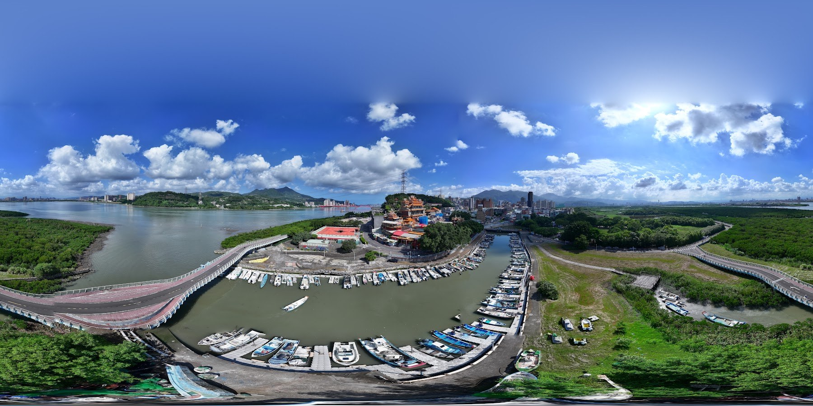
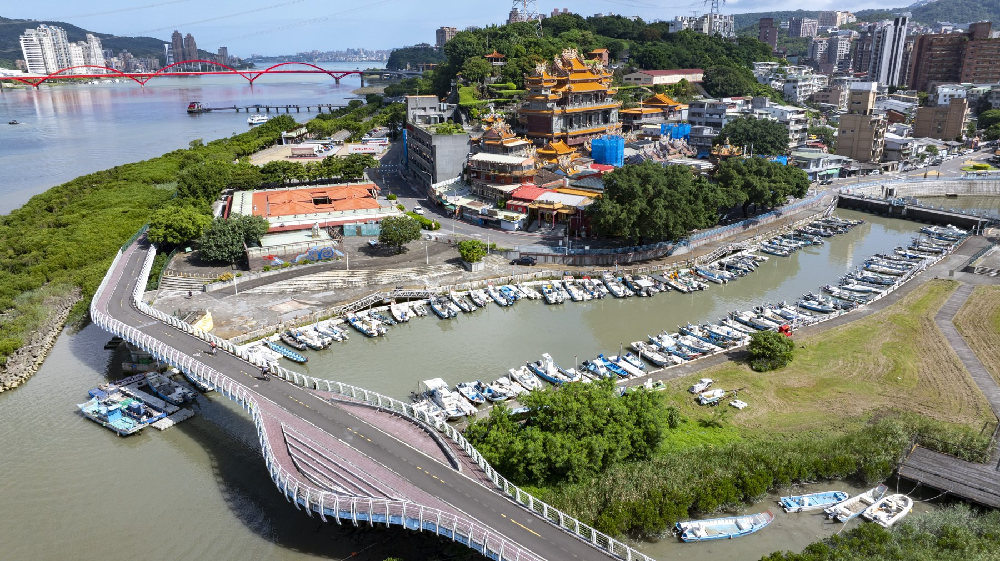
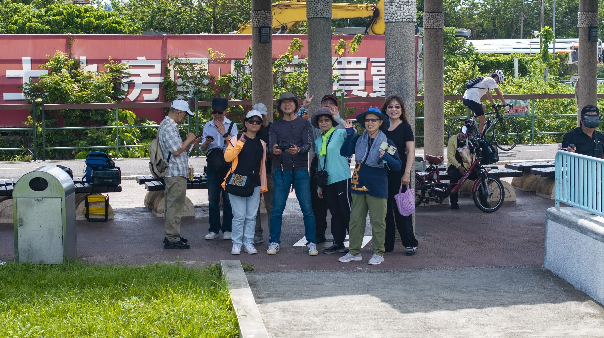
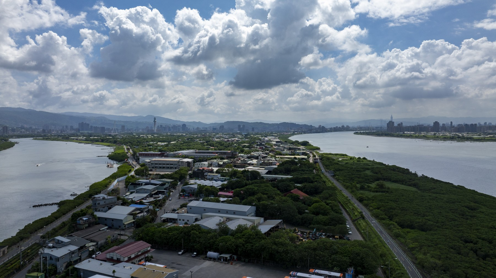
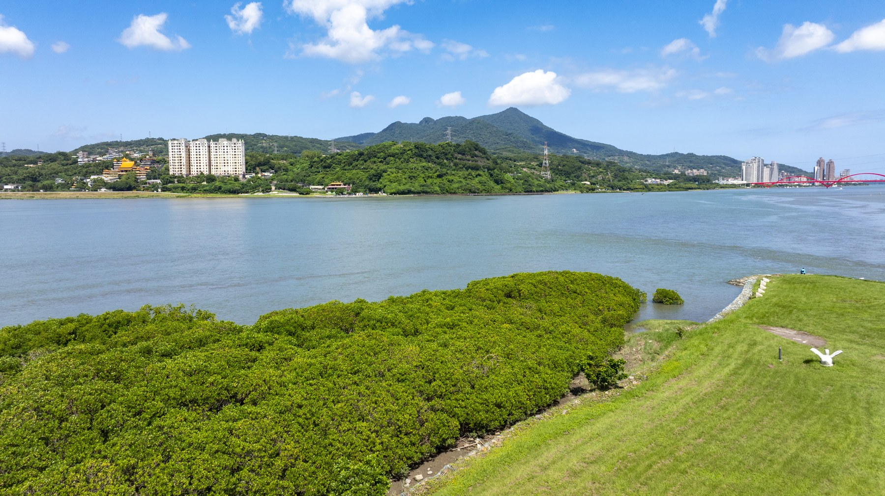
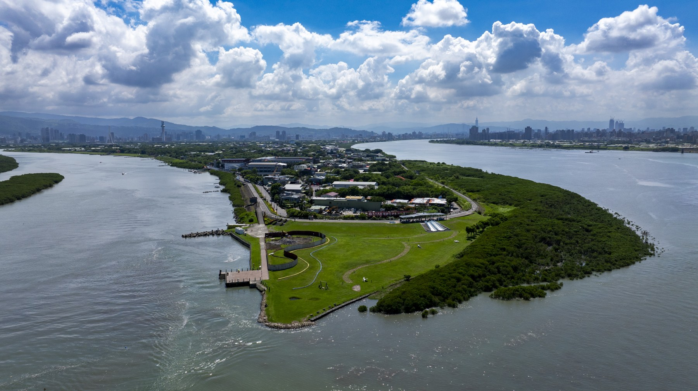
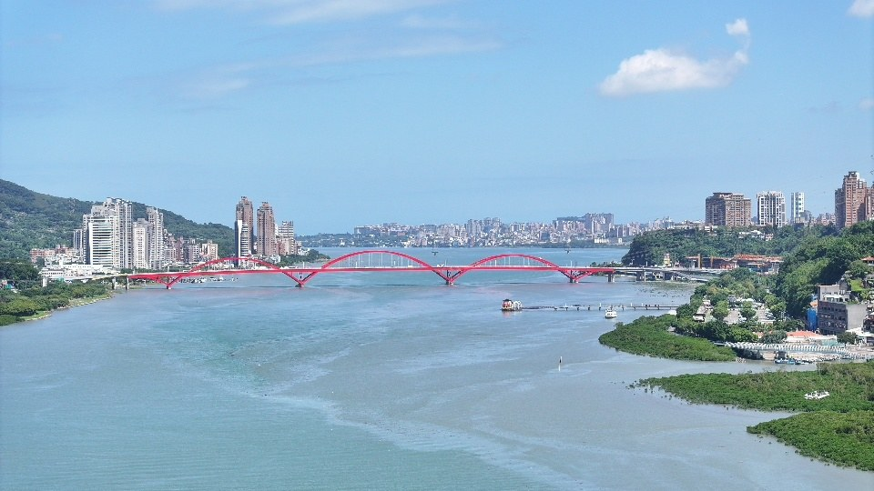
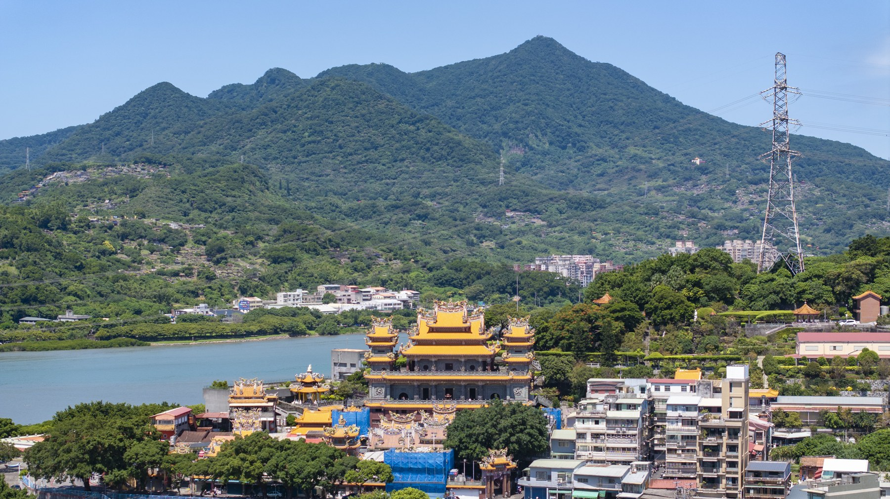
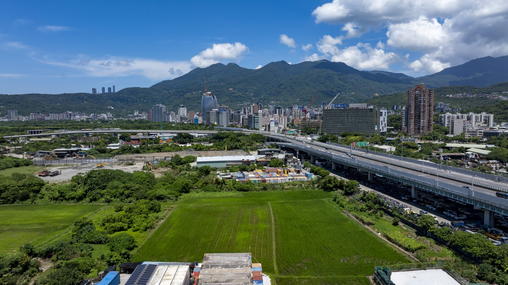
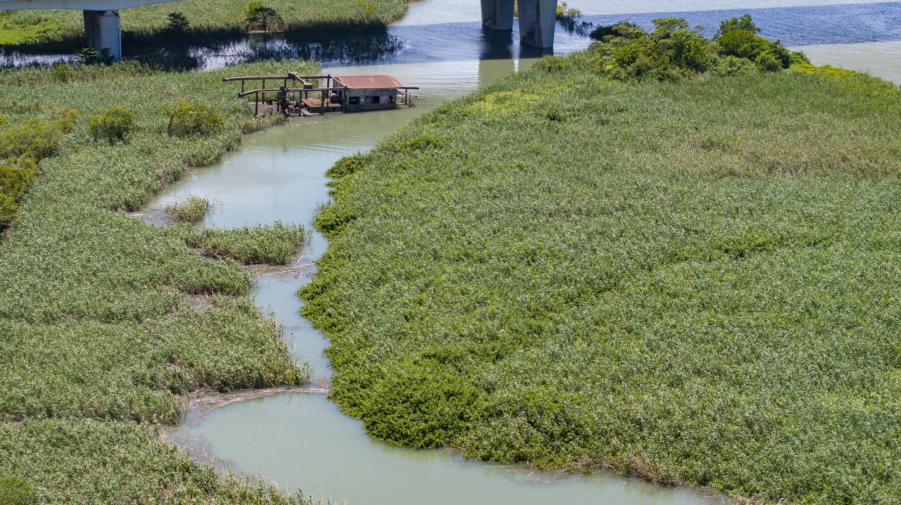
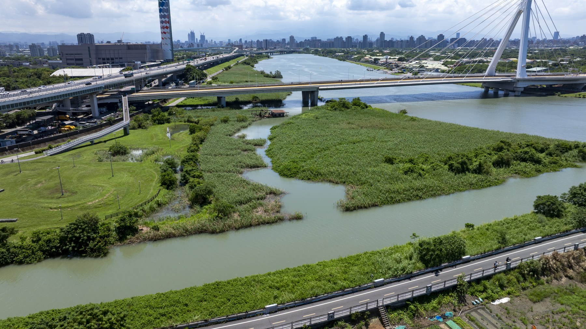
拍攝地點｜淡水河與基隆河交會處、社子島及周邊河岸
北投社空拍紀實
在地圖上讀回風景
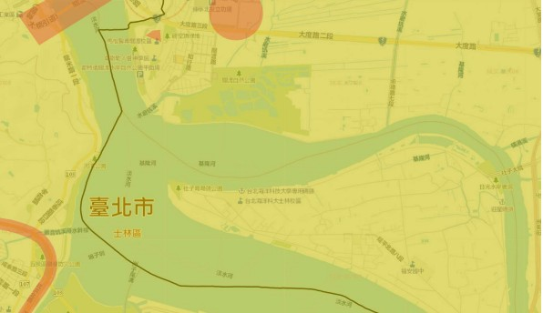
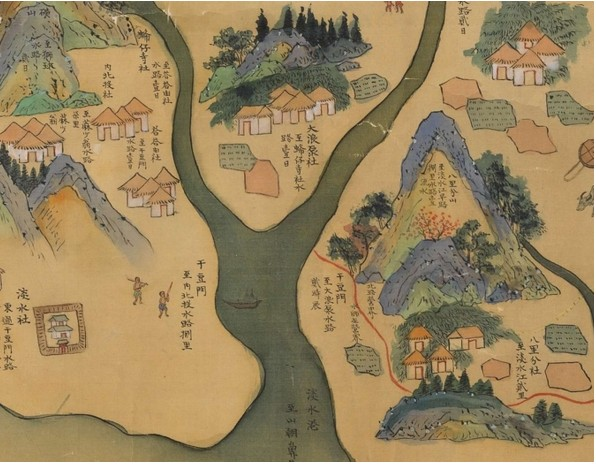